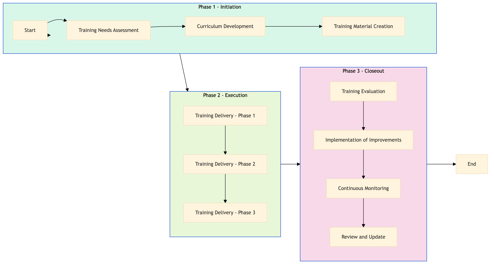

| Role | Steps |
|---|---|
| Learning & Development Manager | 1.1 1.2 1.3 3.1 3.2 3.4 |
| Learning & Development Specialist | 1.2 1.3 2.1 2.2 2.3 3.3 |
| Instructor | 2.1 2.2 2.3 |
| Step | Name | Role | System | Input | Output | KPI | Dec? | Exc? | Pain Point / Risk |
|---|---|---|---|---|---|---|---|---|---|
| 1.1 | Training Needs Assessment | Learning & Development Manager | Oracle OPERA Cloud, Workday HCM | Employee performance data, guest feedback reports | Training needs report | Less than 2 weeks to complete | N | Y | Accurate identification of training gaps based on diverse data sources. |
| 1.2 | Curriculum Development | Learning & Development Specialist | Microsoft Power BI, Salesforce | Training needs report | Service Excellence & Upselling curriculum | Less than 3 weeks to develop | N | Y | Balancing content relevance with practical application. |
| 1.3 | Training Material Creation | Learning & Development Specialist | Microsoft Power BI, Salesforce | Curriculum development | Training manuals, videos, and interactive modules | Less than 4 weeks to create | N | Y | Ensuring materials are engaging and accessible. |
| 2.1 | Training Delivery - Phase 1 | Learning & Development Specialist, Instructor | Book4Time, Microsoft Teams | Training manuals, videos, interactive modules | Recorded training sessions | Less than 2 hours per session | N | Y | Maintaining high engagement levels in virtual settings. |
| 2.2 | Training Delivery - Phase 2 | Learning & Development Specialist, Instructor | Book4Time, Microsoft Teams | Recorded training sessions | Live Q&A sessions | Less than 1 hour per session | N | Y | Addressing individual questions and concerns effectively. |
| 2.3 | Training Delivery - Phase 3 | Learning & Development Specialist, Instructor | Book4Time, Microsoft Teams | Live Q&A sessions | Feedback forms, post-training assessments | Less than 1 week to collect feedback | N | Y | Gathering comprehensive and actionable feedback. |
| 3.1 | Training Evaluation | Learning & Development Manager | Microsoft Power BI, Salesforce | Feedback forms, post-training assessments | Training evaluation report | Less than 2 weeks to evaluate | N | Y | Analyzing feedback and identifying areas for improvement. |
| 3.2 | Implementation of Improvements | Learning & Development Manager, Instructor | Microsoft Power BI, Salesforce | Training evaluation report | Updated training materials and delivery methods | Less than 3 weeks to implement | N | Y | Adapting quickly to feedback and making necessary changes. |
| 3.3 | Continuous Monitoring | Learning & Development Manager, Instructor | Oracle OPERA Cloud, Workday HCM | Employee performance data, guest feedback reports | Ongoing training effectiveness report | Monthly monitoring and reporting | N | Y | Maintaining consistent quality and relevance of the training program. |
| 3.4 | Review and Update | Learning & Development Manager, Instructor | Microsoft Power BI, Salesforce | Ongoing training effectiveness report | Updated training curriculum and materials | Quarterly review cycle | N | Y | Keeping the training content current with industry trends and guest expectations. |
HR-LR-07 Service Excellence & Upselling Training is a structured process designed to enhance service quality and upselling skills among Marriott Bonvoy hotel staff. This training aims to improve guest satisfaction and drive revenue through effective communication and customer engagement.